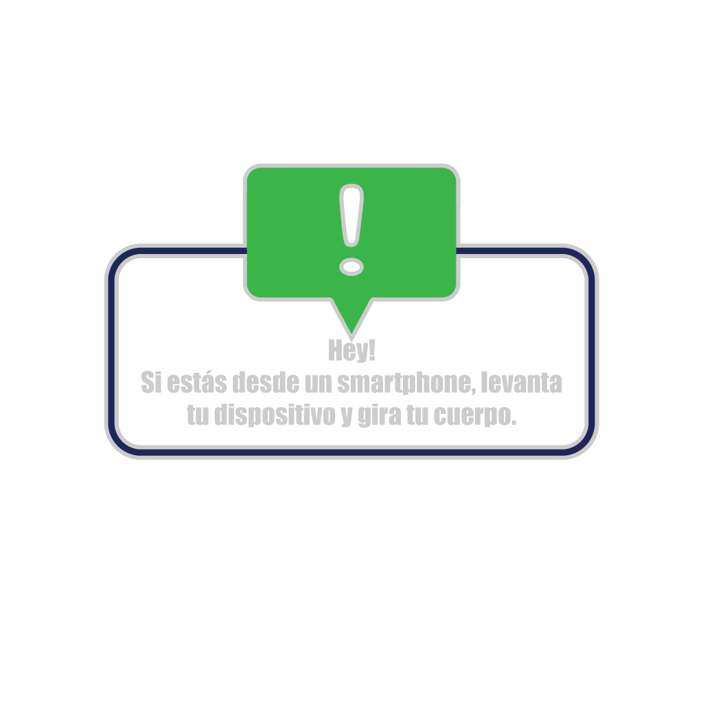
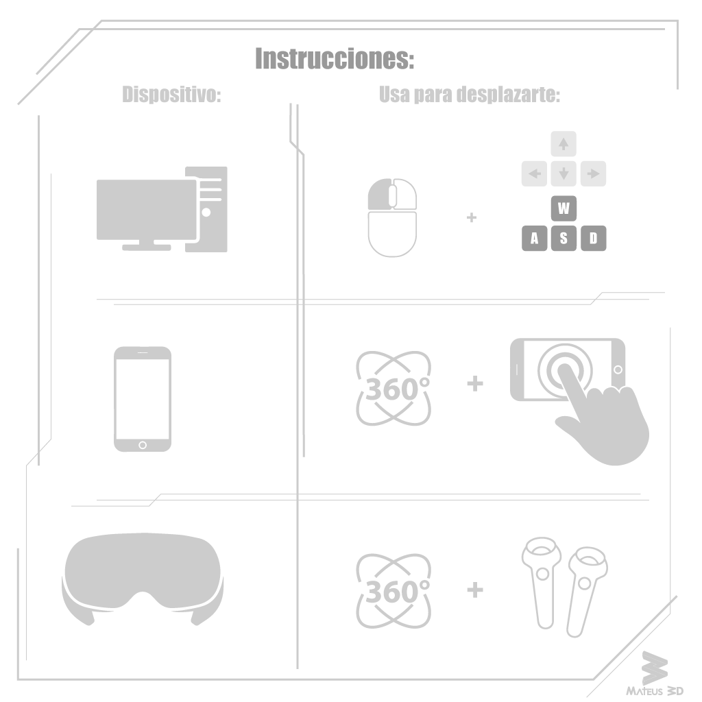

🚀 Artemis II - AROW
Dist. from Earth:
---
km
Dist. from Moon:
---
km
Speed (Rel):
---
km/h
Link Status:
Connecting...
Extraction Rate:
---
Press F5
to Refresh |
VR/PC NAVIGATION:
Hold Left Click to aim |
WASD:
to move | Click on planet to select |
ORBIT:
scroll click |
Autor:
Jesús Mateus

